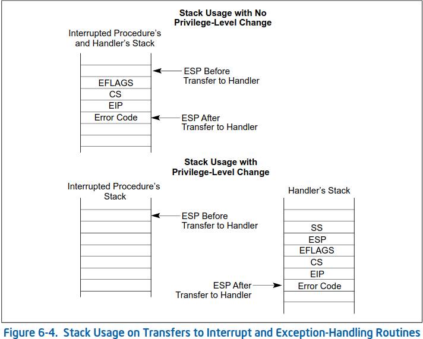
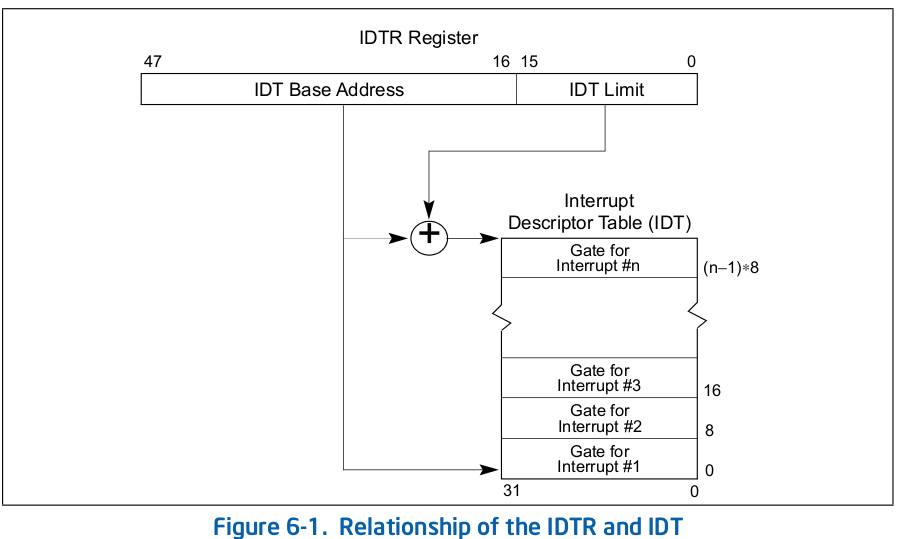

linux内核硬中断分析
前言
最近几天的面试刚好问到了内核中断子系统的相关问题，发现自己对这部分了解的不是非常清晰，因此面试后就读了读Linux 6.5-rc6相关代码。结果发现这部分的代码逻辑并不是非常清楚，所以记录下这篇博客，帮助梳理一下Linux内核的x86-64架构的中断子系统的硬中断部分的逻辑，方便以后快速查阅这部分代码细节。
整个内核中断子系统，简单可以分为上半部(硬中断)和下半部。上半部中断可以理解为从CPU被中断到CPU从中断栈中退出的部分，一般处理一些中断任务中非常紧急的工作；其余工作会推迟到下半部中断，包括softirq、tasklet和workqueue等。
这篇文章主要分析上半部中断，也就是硬中断。
整体流程
硬件中断整体流程如所示，整体可以分为硬件保存/恢复现场，保存/恢复上下文等步骤。
硬件保存/恢复现场
这部分实际上完全是硬件的工作，我们阅读Intel® 64 and IA-32 Architectures Software Developer’s Manual 3A手册的6.12 EXCEPTION AND INTERRUPT HANDLING章节即可。
对于保存现场来说，硬件主要做了如下工作
- 如果从用户态中断，切换到CPU对应的trampoline栈上。该中断栈地址存储在TSS的sp0或IST中，分别在cpu_init()和cpu_init_exception_handling()中初始化。
- 将现场(即SS、RSP、RFLAGS、CS、RIP和Error Code)保存在当前栈上，如所示
根据中断信号的向量号，从中查找对应的中断处理函数并执行即可。IDT分多次设置，但原理是类似的，如idt_setup_traps()所示。
对于恢复现场来说，基本是保存现场的逆操作，这里就不赘述了。
中断入口声明/定义
前面分析到，CPU会从IDT中找到中断信号对应的中断门，然后执行其中中断处理函数。而这个中断处理函数的定义和声明非常的不直观，这里分析一下，方便以后阅读代码细节。
中断门
一般中断门使用INTG宏进行定义，如Divide Error所示
1 | // arch/x86/kernel/idt.c |
因此，为了分析中断的具体处理逻辑， 我们需要知道INTG的中断处理函数的定义信息。
中断处理函数
实际上，Linux内核中，中断处理函数的声明和部分定义，都在arch/x86/include/asm/idtentry.h中，感觉有一点点tricky。
整个部分是通过ASSEMBLY宏实现的。
因为中断处理函数包含多层wrapper，并且中间wrapper大部分都是C语言的，因此在arch/x86/include/asm/idtentry.h中用#ifndef __ASSEMBLY__范围的DECLARE_IDTENTRY宏来声明中断处理函数的所有wrapper。
而中断处理函数的最外层用于保存/恢复上下文，需要汇编实现，因此在arch/x86/include/asm/idtentry.h中使用#ifdef __ASSEMBLY__范围的DECLARE_IDTENTRY宏来定义中断处理函数的最外层。其余部分的定义，可以使用C语言进行实现，则使用#ifndef __ASSEMBLY__范围的DEFINE_IDTENTRY宏来定义。
声明
在Linux内核静态定义了符号，但是解析的宏是#ifndef ASSEMBLY范围的DECLARE_IDTENTRY，主要如下所示
1 | /** |
在这些静态符号中，还有一些其他的宏，但基本都是DECLARE_IDTENTRY的包装，主要声明asm_##func，xen_asm_##func和func三个wrapper。根据注释和前面的中断门分析可知，中断处理函数应当以asm_##func汇编函数为入口，在asm_##func汇编函数中还会调用funcC语言函数。
定义
前面分析了中断函数的声明，这里再看看这些函数是如何定义的，这才是我们最关心的。
对于最外层wrapper的定义，即
asm_##func的定义，仍然在Linux内核静态定义的符号，但是解析的宏是#ifdef ASSEMBLY范围的DECLARE_IDTENTRY宏，主要如下所示1
2
3
4
5/*
* The ASM variants for DECLARE_IDTENTRY*() which emit the ASM entry stubs.
*/而
idtentry宏实际上是定义在arch/x86/entry/entry_64.S的汇编宏，主要用于保存/恢复上下文工作并调用对应的wrapper，在后面部分介绍。对于其余的wrapper的定义，即
func，解析的宏是#ifndef ASSEMBLY范围的DEFINE_IDTENTRY宏，主要如下所示1
2
3
4
5
6
7
8
9
10
11
12
13
14
15
16
17
18
19
20
21
22
23
24
25
26
27/**
* DEFINE_IDTENTRY - Emit code for simple IDT entry points
* @func: Function name of the entry point
*
* @func is called from ASM entry code with interrupts disabled.
*
* The macro is written so it acts as function definition. Append the
* body with a pair of curly brackets.
*
* irqentry_enter() contains common code which has to be invoked before
* arbitrary code in the body. irqentry_exit() contains common code
* which has to run before returning to the low level assembly code.
*/
保存/恢复上下文
根据前面的分析，最后中断处理函数的入口点是idtentry宏定义的函数，如下所示1
2
3
4
5
6
7
8
9
10
11
12
13
14
15
16
17
18
19
20
21
22
23
24
25
26
27
28
29
30
31
32
33
34
35
36
37
38
39
40
41
42
43
44
45
46
47
48
49
50
51
52
53
54
55
56
57
58
59
60
61
62
63
64
65
66
67
68
69
70
71
72
73
74
75
76
77
78
79
80
81
82
83
84/**
* idtentry_body - Macro to emit code calling the C function
* @cfunc: C function to be called
* @has_error_code: Hardware pushed error code on stack
*/
.macro idtentry_body cfunc has_error_code:req
/*
* Call error_entry() and switch to the task stack if from userspace.
*
* When in XENPV, it is already in the task stack, and it can't fault
* for native_iret() nor native_load_gs_index() since XENPV uses its
* own pvops for IRET and load_gs_index(). And it doesn't need to
* switch the CR3. So it can skip invoking error_entry().
*/
ALTERNATIVE "call error_entry; movq %rax, %rsp", \
"call xen_error_entry", X86_FEATURE_XENPV
ENCODE_FRAME_POINTER
UNWIND_HINT_REGS
movq %rsp, %rdi /* pt_regs pointer into 1st argument*/
.if \has_error_code == 1
movq ORIG_RAX(%rsp), %rsi /* get error code into 2nd argument*/
movq $-1, ORIG_RAX(%rsp) /* no syscall to restart */
.endif
call \cfunc
/* For some configurations \cfunc ends up being a noreturn. */
REACHABLE
jmp error_return
.endm
/**
* idtentry - Macro to generate entry stubs for simple IDT entries
* @vector: Vector number
* @asmsym: ASM symbol for the entry point
* @cfunc: C function to be called
* @has_error_code: Hardware pushed error code on stack
*
* The macro emits code to set up the kernel context for straight forward
* and simple IDT entries. No IST stack, no paranoid entry checks.
*/
.macro idtentry vector asmsym cfunc has_error_code:req
SYM_CODE_START(\asmsym)
.if \vector == X86_TRAP_BP
/* #BP advances %rip to the next instruction */
UNWIND_HINT_IRET_ENTRY offset=\has_error_code*8 signal=0
.else
UNWIND_HINT_IRET_ENTRY offset=\has_error_code*8
.endif
ENDBR
ASM_CLAC
cld
.if \has_error_code == 0
pushq $-1 /* ORIG_RAX: no syscall to restart */
.endif
.if \vector == X86_TRAP_BP
/*
* If coming from kernel space, create a 6-word gap to allow the
* int3 handler to emulate a call instruction.
*/
testb $3, CS-ORIG_RAX(%rsp)
jnz .Lfrom_usermode_no_gap_\@
.rept 6
pushq 5*8(%rsp)
.endr
UNWIND_HINT_IRET_REGS offset=8
.Lfrom_usermode_no_gap_\@:
.endif
idtentry_body \cfunc \has_error_code
_ASM_NOKPROBE(\asmsym)
SYM_CODE_END(\asmsym)
.endm
到这里，剩下的代码就非常容易分析了，这里主要分析一下保存/恢复上下文的代码，即idtentry_body和error_entry逻辑
- 在当前栈上构造struct pt_regs结构体
- 如果从用户态中断，将trampoline栈上的
struct pt_regs移动到内核栈上，并切换到内核栈上
总的来说，最后的效果是，将新的struct pt_regspush到当前进程的内核栈中。
恢复上下文应该是其逆操作，这里就不在赘述了。
栈切换
根据上面的分析，对于普通的中断来说，其最多涉及到trampoline栈和内核栈的切换，实际上还可能有中断栈的切换，如DEFINE_IDTENTRY_IRQ宏所示，其在func的wrapper中，添加run_irq_on_irqstack_cond()，完成中断栈的切换